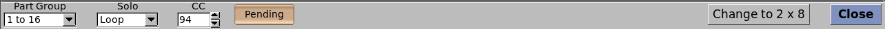
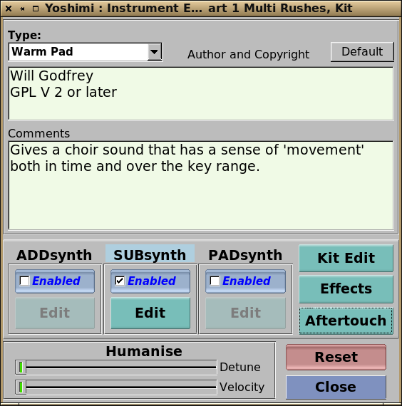
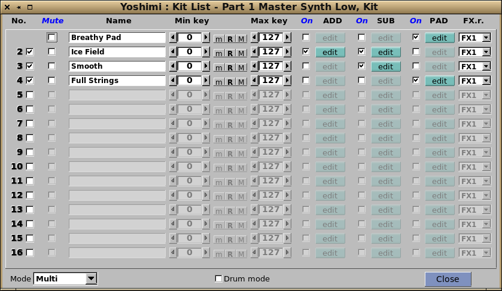
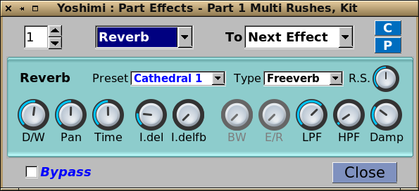

The first control is the part number you are currently looking at, and
alongside this selection is an entry to decide the number of parts. These are rows of 16, and can be 16 (the default), 32 and 64. Initially the higher numbered ones take the same channel as the matching default ones. The is especially useful for Vector control where a 'column' of up to four parts can linked and controlled by a MIDI joystick, or similar.
On the same line you then have what is both a shortcut button to open the window for the current selected bank and (with a right-click) an editable field for the part's current instrument name. Finally, there is an Edit button for detailed part editing.
Below the part number is the MIDI channel it will respond to, and alongside this is the playing mode. This can be Polyphonic, Monophonic or Legato. Legato is not available if Drum Mode has been set in the Part Kit editing window, and temporarily reverts to Poly with a red warning background.
Just underneath these are the switches to enable or disable the entire part, and to set whether Portamento between notes is allowed.
The four controls to the right set the respective levels for the entire part.
Vel. Sens. This sets the velocity sensitivity to incoming MIDI messages.
Vel. Offs. Velocity offset sets the point at which Yoshimi starts to actually respond.
Pan Is a normal panning control for the part and is directly linked to the one in the mixer.
Volume This is also directly linked to the mixer control for overall part volume.
Nomally the Controllers button opens the MIDI Controllers window. However a right click on it will instead open a window for the MIDI CCs window (shown at the foot of the same page).
The Pan Law menu selects one of three common panning behaviours. The default is close a constant power output. The first number refers to the apparent level of the side it is panned to, and the other number is the equivalent output when switched to MONO.
Underneath 'Controllers' are the key range controls.
Min Note sets the lowest MIDI key this part will respond to. The Set button alongside sets this to the last note played.
Max Note sets the highest MIDI key this part will respond to. The Set button alongside sets this to the last note played.
R resets both the lowest and highest keys to their default values.
Key Shift provides up to three octaves of key shift in semitone steps.
Key Limit sets the maximum number of concurrent notes for this part.
The four controls at bottom right set the amount of this part that will be sent to each of the System effects.
Yoshimi can operate simultaneously across all 16 MIDI channels, so it makes sense to be able to see all of these together, hence the mixer panel shown to the right. The part that is accessible in the main window is shown highlighted in this panel.
This window gives a view of what is happening overall, and allows you to select instrument patches, change volume and panning, as well as selecting the incoming MIDI channel.
If using Jack Audio you also have the ability to decide the audio destination from here.
If more than 16 parts have been enabled, a new menu appears to the left of Solo, to enable you to select which row of 16 that you want to manage. This cut-down image shows both multiple columns, i.e. more than 16 parts, and Solo in the process of being set up.

Mixer controls
(Chanel strips)
Check box Clicking on this will turn the part on or off. If turing it on it will also make it the currently selected one.
Instrument (name) As well as showing the name and which engines are used (from the colours) clicking on this will make it the currently selected one, and open the instrument bank window.
Volume Changes the part's volume but doesn't make it the current one. Alongside are the left and right VU meters.
Panning Changes the stereo position of this part. Doesn't make it current.
Ch (MIDI channel) Provides a menu for selecting the channel to listen to. Doesn't make the part current.
Main (audio destination) Only when using Jack Audio, allows you to send audio to the main pair, the part ones only or to both. Doesn't make the part current.
Edit Makes the part the current one. A right click also opens the part's Edit window.
(Bottom row)
Part Group If more than 16 parts are selected this will let you switch the view to which 'row' you want to manage.
Change to (display format) This gives you the choice of one row of sixteen, or two rows of eight parts.

The Edit button mentioned above opens this window for full access to all part editing.
Enabling and disabling the engines is done from here, along with access to them via the respective 'Edit' buttons.
Editor controls
Default Clicking on this button will fill the copyright field with a saved entry (if it exists), while holding down Ctrl at the same time will save the currently contents of the field as the default.
Author and Copyright (text entry) A free text field for you to enter whatever copyright infomation you like.
Comments (text entry) A field for additional comments, such as how the instrument can be modified, where it sounds best etc.
Enabled (AddSynth) Makes this engine active or inactive.
Edit (AddSynth) Opens the AddSynth global editing window.
Enabled (SubSynth Makes this engine active or inactive.
Edit (SubSynth) Opens the SubSynth editing window.
Enabled (PadSynth) Makes this engine active or inactive. A first-time enabling will temporarily stop sound from that part, as the PadSynth wavetable has to be created.
Edit (PadSynth) Opens the PadSynth editing window.
Kit Edit Opens the part's kit mode window.
Effects Opens the Effects window for editing.
Detune (Humanise) This controls enables you to set a small random detune of the entire part.
Velocity (Humanise) With this control you can set a random whole part attenuation.

Part kits can consist of up to 16 kit items, each with its own key range and full set of engines.
Kit controls
(kit item strips)
No. (checkbox) This enables or disables the kit item. It silences the part while doing so as it has to change the total number of engines for that part.
Mute Silences this kit item. It has no effect on any other items, or the part overall.
Name Each item can be named independently
Min key The minimum MIDI key number this item with respond to.
m Use the last pressed key to set the minimum key number.
R Reset the key range.
M Use the last pressed key to set the maximum key number.
Max key The maximum key number for this kit item.
On (AddSynth) Enables or disables the item's AddSynth Engine.
Edit (AddSynth) Opens the AddSynth editing window for this item.
On (SubSynth) Enables or disables the item's SubSynth Engine.
Edit (SubSynth) Opens the SubSynth editing window for this item.
On (PadSynth) Enables or disables the item's PadSynth Engine. A first time enabling, will also silence the part as it has to generate a new wavetable.
Edit (PadSynth) Opens the PadSynth editing window for this item.
FX.r. Sets which of the part's three effects will be applied this item.
(bottom row)
Mode This menu selects which kit mode that is used.
Multi - All kit items will sound over their full key range.
Single - Only the item that has the lowest min. key will sound over any overlapping ones. Beyond its highest note, the next one with the lowest min. will sound etc.
Crossfade - Pairs of items will fade from one to the other if they overlap, without affecting any others.
Drum mode This blocks various pitch modifying controls for this part (such as Key shift, Legato).

Effects
This is the part level window which selects, contains and manages the individual
Effects and their routing.
The spinbox selects which of three part effects you are managing.
The menu choses the effect, which will then appear an the area below.
The last menu determines the routing of the effects.
- Next Effect (default): will send the output of the effect to the next one in the chain.
- Part Out: makes the current effect the last one in the chain, effectivly ignoring any other following effect.
- Dry Out: This will send the effect output directly where part effects are added together. If an effect is set to Dry Out and then bypassed the signal will not pass to the next effect. Explain dry out better!
At the bottom of this window is a button to allow you to disable this effect without losing the settings, or altering the routing for the other effects in the chain.
Aftertouch
Each part can have independent Channel, and Key aftertouch. The controls shown are in parallel to the incoming CCs so you should not use the incoming CC at the same time as aftertouch, otherwise the results can be quite confusing. You can have several of the controls working at the same time, but not on both channel and key at the same time.
The normal range is from the CC value at the time the key was pressed up to the maximum for that control. If 'Down' is set as well, the effect will be in the reverse direction. i.e. down to the control's minimum value.
Next (AddSynth Engine)
Back to 'Edit' SubSynth EngineBack to 'Kit' PadSynth EngineBack to top


 Each part can have independent Channel, and Key aftertouch. The controls shown are in parallel to the incoming CCs so you should not use the incoming CC at the same time as aftertouch, otherwise the results can be quite confusing. You can have several of the controls working at the same time, but not on both channel and key at the same time.
Each part can have independent Channel, and Key aftertouch. The controls shown are in parallel to the incoming CCs so you should not use the incoming CC at the same time as aftertouch, otherwise the results can be quite confusing. You can have several of the controls working at the same time, but not on both channel and key at the same time.